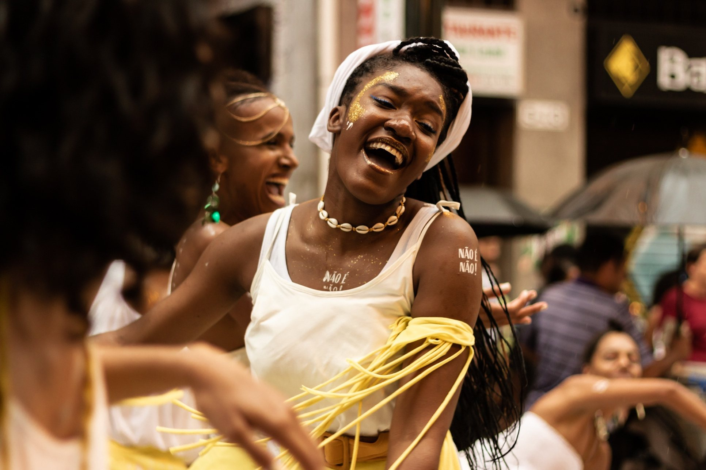
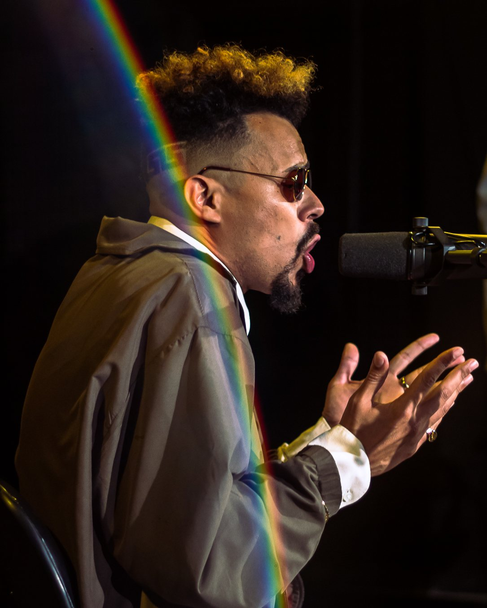
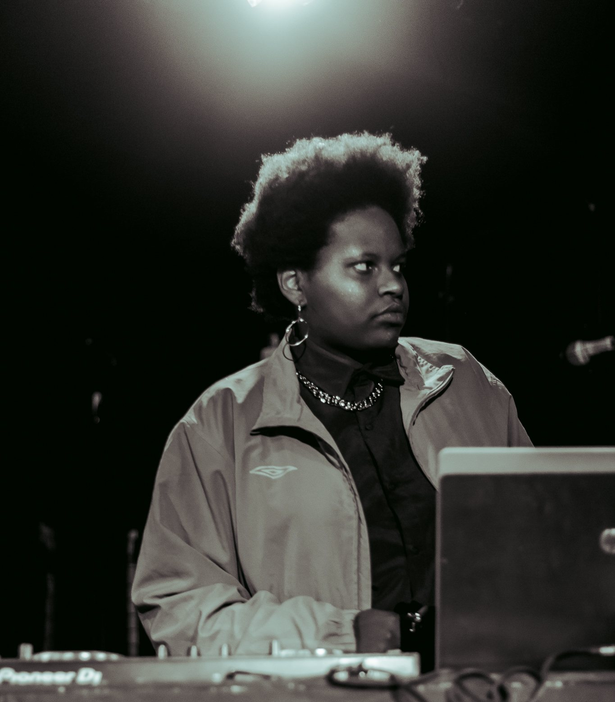
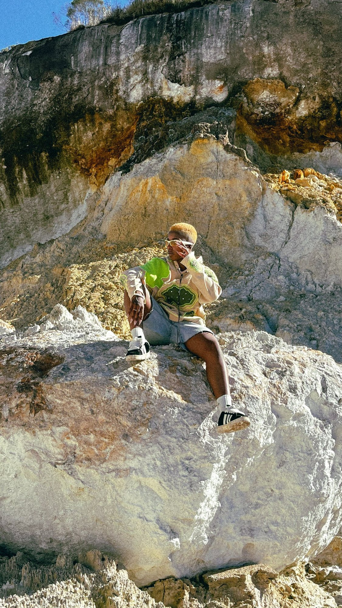
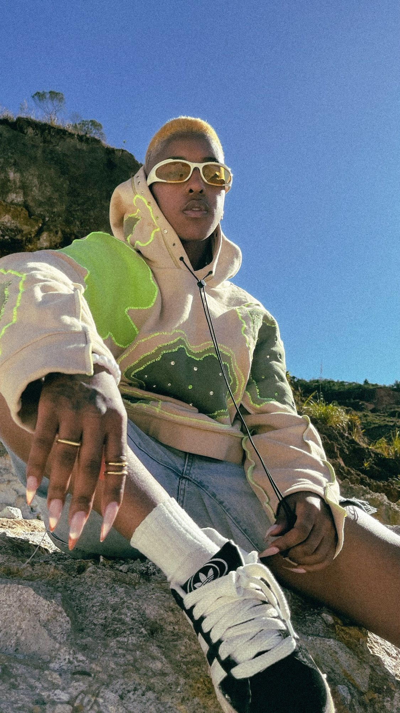
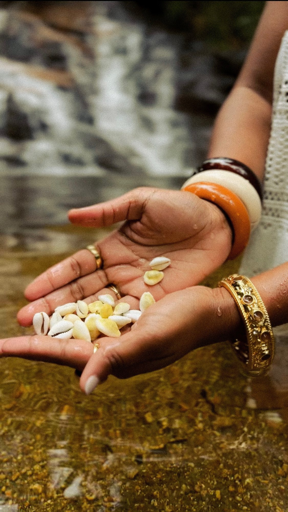
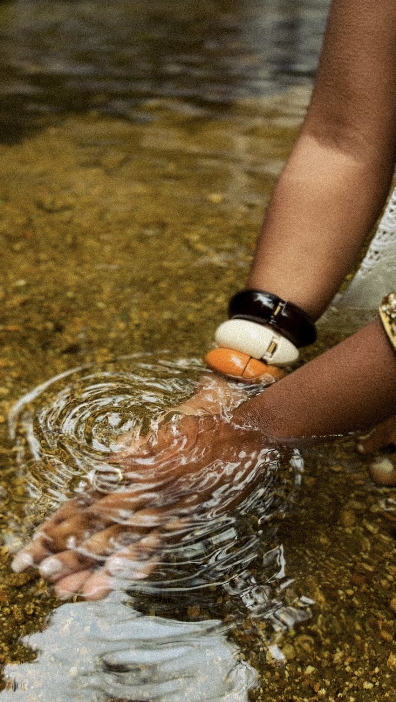
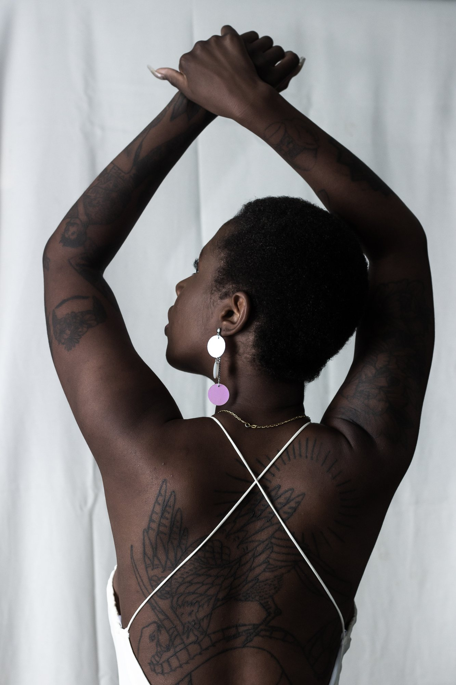
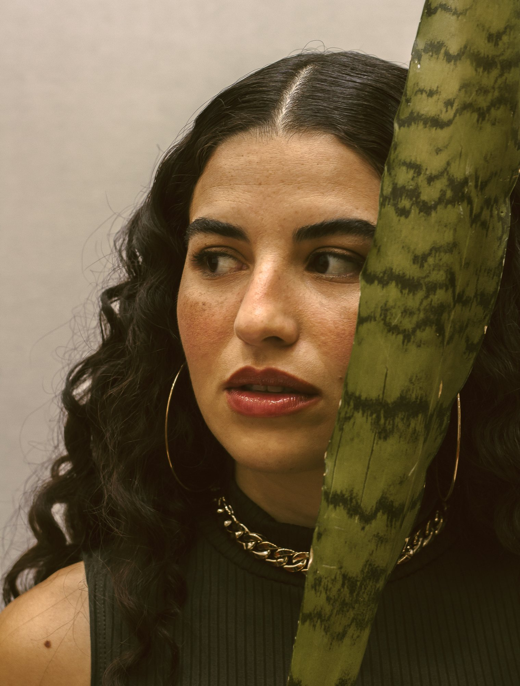

Gabriel
Faiya
Fotografia e cinematografiaOlhar, sombra e luz.
Manifesto
Fotografar é me relacionar com o mundo.
Meu olhar procura o que acontece entre as pessoas, os lugares e as histórias que elas carregam.
Gente de Curitiba
Gente de Curitiba
Série
Cultura em movimento
Cortejos, palcos e gravações. Registros da música, da dança e do hip-hop na cidade.





Gente de Curitiba
Série
Pedra
Ensaio de moda feito numa formação rochosa, em Curitiba. As imagens se aproximam aos poucos, da paisagem até o gesto.




Gente de Curitiba
Série
Cabeceira
Cabeceira é o lugar onde o rio nasce. Ensaio feito numa cachoeira, em Curitiba, sobre água, adorno e origem.




Gente de Curitiba
Série
Abebé
Ensaio de pele, adornos e abebé.




Gente de Curitiba
Série
Guarda-me
Retratos em estúdio com uma espada-de-são-jorge, planta ligada à proteção na cultura brasileira.


Sobre
Sou Gabriel Faiya, fotógrafo e cinegrafista em Curitiba.
Fotografo profissionalmente há cerca de dez anos. A formação técnica e os trabalhos comerciais em diversas áreas me deram domínio de luz, flash, direção de pessoas e tratamento. Hoje coloco esse ofício a serviço de uma pesquisa autoral sobre identidade e expressão na cultura brasileira contemporânea, nas culturas afrodiaspóricas, no hip-hop, na moda e nas ruas.
Meu trabalho fica entre o documental e o editorial. Me interessa o gesto que acontece sem ensaio e também a imagem construída junto com quem está na frente da câmera. Presto muita atenção aos detalhes, às mãos, aos adornos, à pele e às roupas.
Serviços
Retrato, vídeo e fotografia editorial para artistas, marcas e publicações, com abordagem documental e acabamento profissional.
Retrato e editorial
- Retratos documentais
- Fotografia editorial
- Fotografia de moda
- Ensaios autorais
Cultura e música
- Eventos culturais
- Cobertura de manifestações artísticas
- Artistas e profissionais criativos
Marcas e projetos
- Conteúdo visual para marcas e projetos culturais
- Identidade e posicionamento de marca
Cinegrafista
- Vídeo documental
- Story maker
- Entrevistas
Trabalho com câmera e também com celular, quando o projeto pede agilidade. Atendo em Curitiba, em outras regiões do Brasil e no exterior.